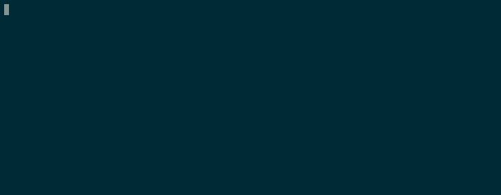

Criar um Branch chamado git
-> git chegout -b git

O Git é um sistema open source de controle de versão de código, criado pelo mesmo desenvolvedor do Linux. Ele guarda versão do seu código.
Através do Git Bash, entra na pasta do projeto no seu computador.
-> git init
-> git remote add origin PoeOLinkDoRepositorioDoGIT
-> git status
-> git commit -m "comentario"
-> git status
-> git push origin master
Entra na pasta onde vai clonar.
-> git clone EnderecoQueVaiClonar.git
-> git chegout -b git